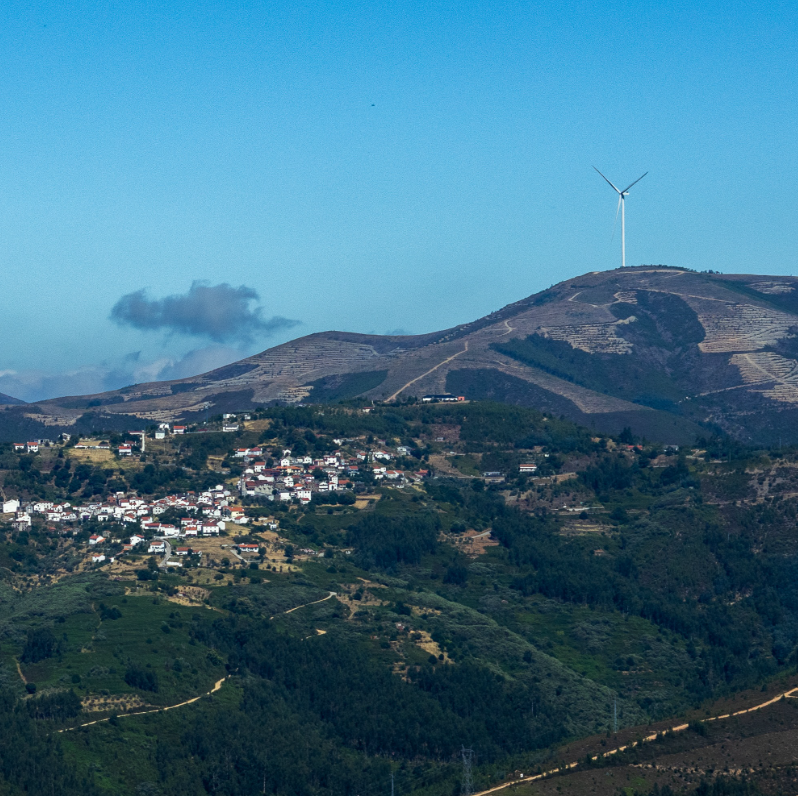
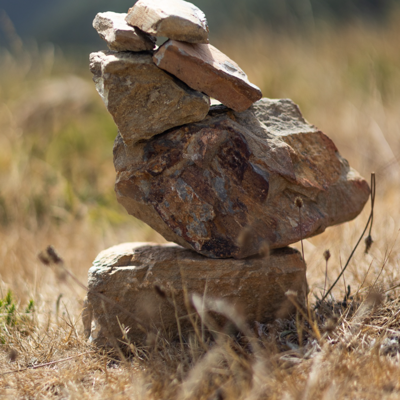
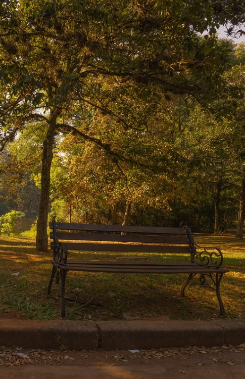
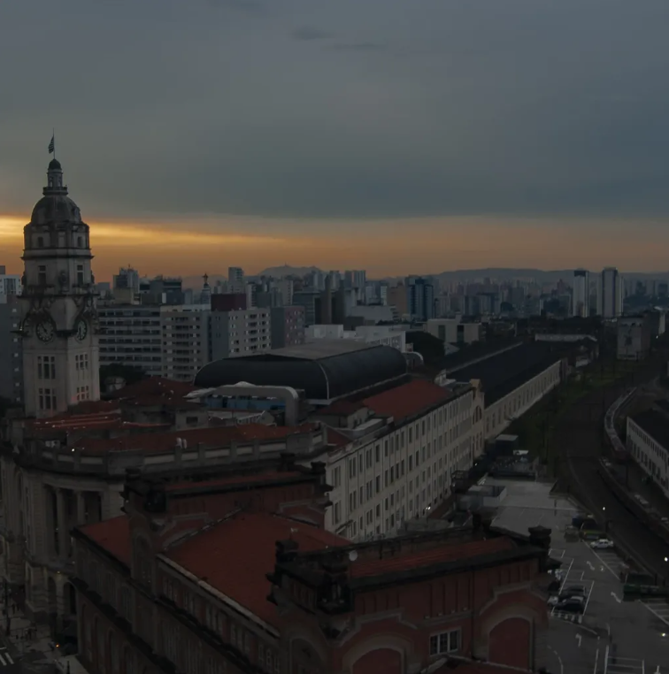
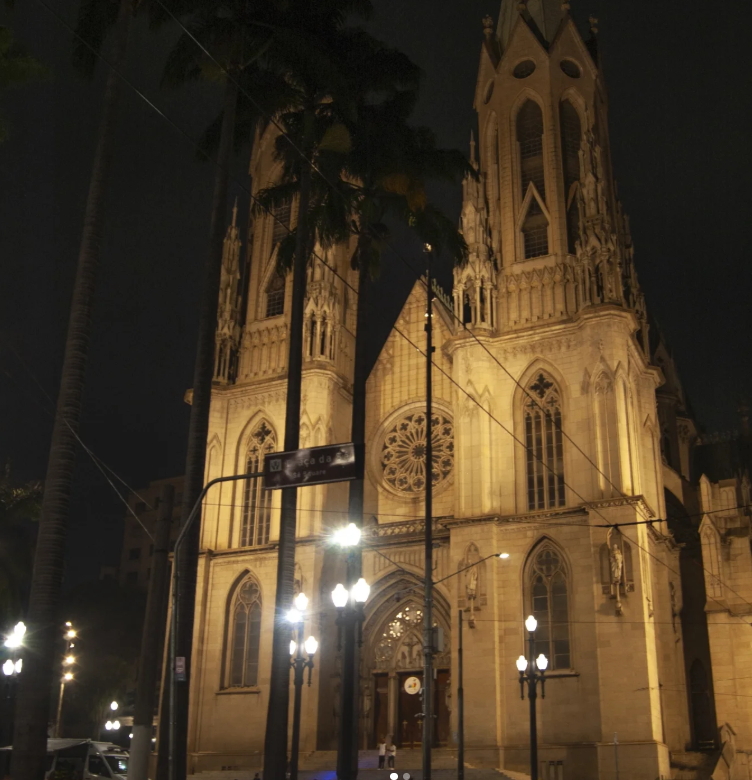
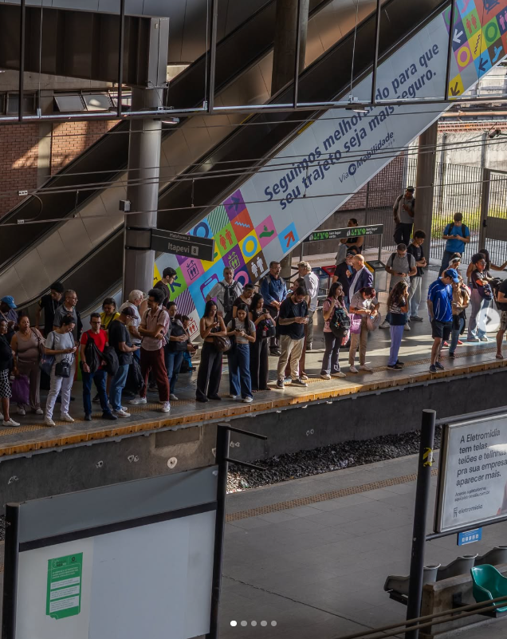
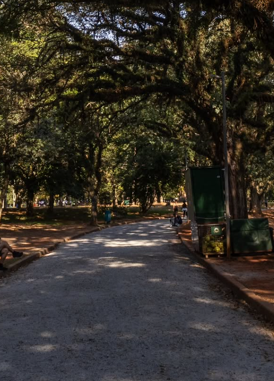
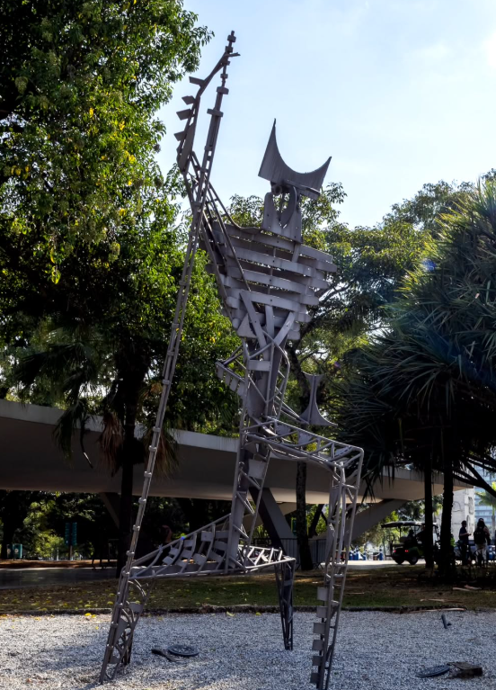
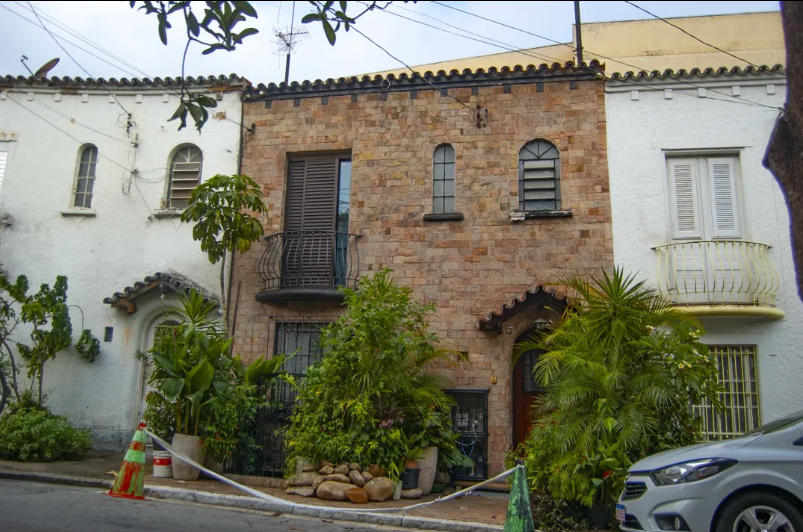

Tudo começou
com o céu.
Hoje, encontro novos motivos para olhar.
Na natureza, na cidade e nos caminhos entre elas.

Um mundo inteiro
para reparar.
De lugares abertos aos detalhes do cotidiano.
Dez fotografias do meu caminho até aqui.



Ampliar


Ampliar

Ampliar

Ampliar

Ampliar

Ampliar

Ampliar

AmpliarO céu foi o começo.
A curiosidade continua.
Sou Guilherme Coronado, de São Paulo. Comecei a fotografar há dois anos, por causa do céu. Essa vontade de registrar o que vejo foi abrindo espaço para paisagens, viagens, natureza, eventos e fotografia urbana.
Também adoro jogos, o universo e biologia. A fotografia faz parte dessa curiosidade: uma forma de conhecer lugares, observar a vida e guardar o que chama minha atenção.
Estou estudando para me profissionalizar e construindo meu caminho, uma fotografia de cada vez.
Do universo à vida ao redor.
CURIOSIDADE QUE VIRA FOTOGRAFIAEntre o horizonte
e a próxima esquina.
Os temas que mais gosto de explorar
com a câmera.
Paisagens
O horizonte como ponto de partida.
AMPLITUDEViagens
Novos lugares, novas perspectivas.
DESCOBERTANatureza
A vida que acontece ao redor.
VIDAFotografia urbana
A cidade vista de perto.
COTIDIANOEventos
Encontros e momentos para guardar.
PRESENÇAUma boa conversa
pode ser o começo.
Para falar sobre fotografia, propor um projeto
ou conhecer melhor meu trabalho.